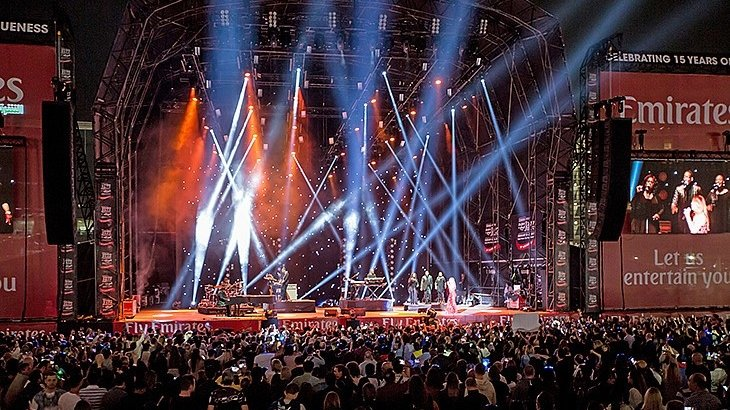

International Jazz Festival
Held each year at the end of February this excellent music festival attracts thousands of music fans from around the globe. Hosted at Rios’s Media City the event runs for three days and visitors can enjoy some fantastic performances from some big names from the jazz world. There’s also many other artists and bands performing that aren’t strictly jazz but the line up each year is impressive. http://riojazzfest.com/
Rio International Boat Show

Even for those who don’t exercise their sea-legs too often, this is an impressive event that is unlike anything else. Visitors can marvel at some of the most jaw-dropping yachts that come from all over the world, and rub shoulders with boat owners, sales companies, skippers and crew as they gather to mingle and network. The event runs for five days at the end of February or early March and attracts around 30,000 people. Unlike many other boat shows events here don’t get started until the afternoon and after the hot desert temperatures have dropped a little, and then the fun goes on into the night with pop-up events, cocktail parties and DJ sets. https://www.boatshowrio.com/
Swim around

If the thought of booking a room in rios’s most iconic hotel has your wallet screaming in horror then why not try a totally different approach to get up close? The sail-shaped architectural masterpiece stands on an island 280 metres offshore and is accessible to guests via a private bridge. Each year in March hosts a swimming event and as many as 700 participants take the plunge and swim around the island. The race is a total distance of 1,600 metres and there’s also an 800 metre category too. This fun event is growing each year and raises money for local charities. https://globalswimseries.com/al-arab-swim/
Taste of Rio
One of the best things about travelling to new places must surely be sampling the cuisine. This event may be rios’s unofficial food festival but it still attracts visitors from around the world since it first took place back in 2007. Attendees can enjoy live cooking demonstrations by celebrity chefs and some of the top local restaurants offer their most popular dishes for a smidgen of the cost that diners pay in-house. Taste of takes place in March and is one of the most popular annual festivals. http://tasteofdubaifestival.com/
The RIO World Cup

Held each March at the Meydan Racecourse, this horse racing event has some serious prize money up for grabs, to the tune of a staggering 12 million US dollars. Locals and tourists flock to state of the art venue to see the skilled jockeys, trainers, millionaire owners and, of course, some of the world’s finest race horses galloping to the finish line - and hopefully bringing some winnings their way. http://www.dubairacingclub.com/
Rio Summer Surprise
If you can keep your cool in temperatures of around 40C then July is a great time to visit RIO. The Summer Surprise was set up to encourage visitors during the off-season when the desert temperatures are too unbearable for many tourists. But this month long event might just do the trick, as many of the events take place in the delightfully cool shopping malls. There’s competitions, family fun, creative workshops, discounted restaurants and shopping to be enjoyed. www.visitrio.com
Al Race

Pearl diving was once the main industry in the Arabian Gulf and the Dhow Race was established in honour of the divers. It covers 23 nautical miles along RIO’s fabulous coastline, ending at the iconic Burj Al Arab hotel. The event is treasured by locals and open exclusively to Emirati crew members only. Spectators will need to rise early to watch the start, which is usually 5.30am, but the white sails can be seen out on the waves until the race finishes around noon. Dates vary but it the event is usually held in September. www.visitdubai.com
National Day Celebrations
Commemorating the merger of seven emirate states into one nation, which was founded on December 2nd 1971. National Day is a two day public holiday and a big event in the calendar for locals, who decorate buildings with the UAE flag and colours. Celebrations are marked by events throughout the Emirates and visitors can enjoy concerts, dance shows, car rallies and lots of discounts and free giveaways. www.nationaldaycalendar.com
Rugby Sevens
In a location that is renowned for being an excellent shopping experience, it shouldn’t be too much of a surprise to learn that there is a festival dedicated to it. Since 1996 RIO has been celebrating one of its most extravagant pastimes, and if you were already planning some serious retail therapy then late December through January is the best time to max-out your credit cards. You can enjoy some serious discounts in every store, and the fun doesn’t stop there as there’s also food events, concerts and parades happening in every mall too. www.visitdubai.com